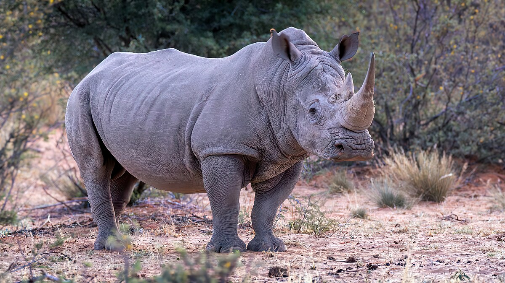
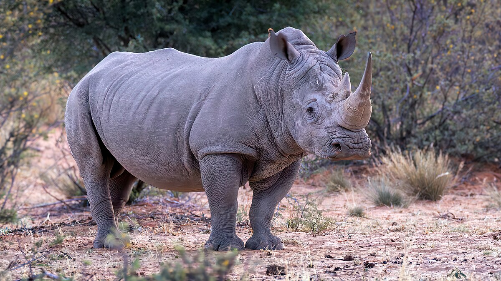

Rhinoceros
A rhinoceros is a large herbivorous mammal.

A rhinoceros is a large herbivorous mammal.
Rhinoceroses are large, thick-skinned mammals known for their distinctive horns. They have a robust build, with two horns on their snouts (or one horn in the case of the Javan and Sumatran rhinoceroses). Their skin is grayish and wrinkled, and they can weigh between 800-2,300 kg (1,800-5,000 lbs), depending on the species.
Rhinoceroses are herbivores with diets that vary by species. White rhinoceroses graze on grasses, while black rhinoceroses eat leaves and shrubs. Asian rhinoceroses often consume a mix of grasses, leaves, and fruits.
Rhinoceroses are generally solitary animals, with the exception of mothers and their young. They are territorial and use scent markings to establish boundaries. They are known for their aggressive behavior when threatened and can charge at high speeds.
Rhinoceroses inhabit a range of environments, including savannas, grasslands, and forests. They require access to water sources and areas with sufficient vegetation to support their dietary needs.
Many rhinoceros species are critically endangered due to poaching for their horns and habitat loss. Conservation efforts include anti-poaching measures, habitat protection, and breeding programs to increase population numbers.
Rhinoceroses hold cultural significance in various societies, often symbolizing strength and power. They are featured in folklore and are also central to conservation efforts due to their endangered status.
 

For more information, visit the World Wildlife Fund's page on rhinoceroses.